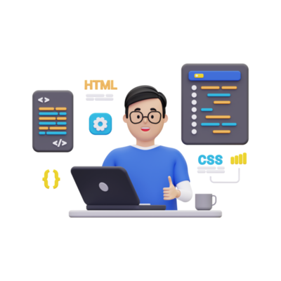
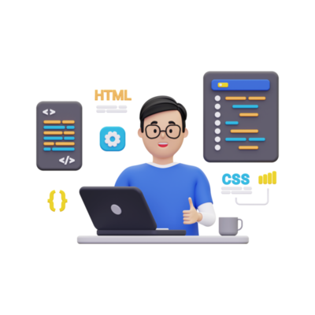

About Me
Hi, I’m Juan José Villamizar Santander from Colombia.
As a passionate Full-Stack Developer, I thrive on turning complex challenges into simple, beautiful, and intuitive solutions.My expertise in building applications with Node.js, Express, MongoDB, and React. My journey into the tech world has been driven by curiosity and problem-solving.
Beyond coding, I’m an like workout and a frappe enthusiast. These hobbies keep me energized and inspired, providing a balance to my tech-driven life.
My ultimate goal is to leverage technology to create meaningful and impactful applications that make a difference. I believe in the power of continuous learning and innovation, and I’m always excited to take on new challenges and push the boundaries of what’s possible.
 
